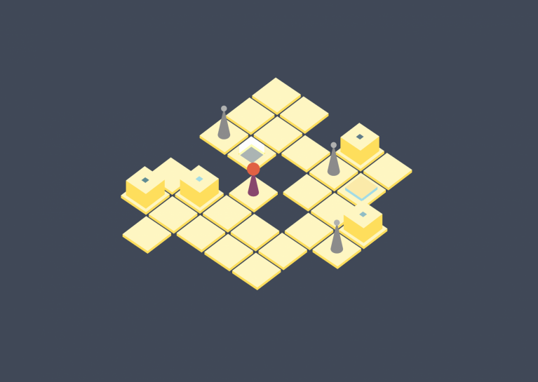
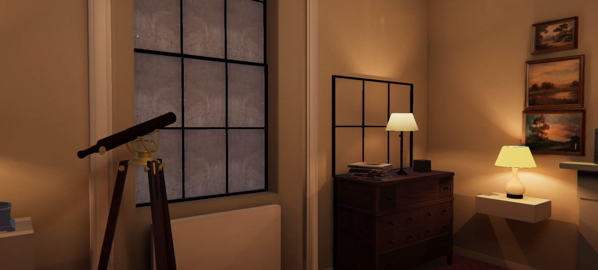

Hi, I'm Bardia
and I make games
Spaced_Out
September 2017
Spaced_Out was born in a one-week game jam. This was almost the first game I completed, except the totally awesome flash game I made back when I was a kid called Jack the Ghost!
It features an inventory system with a crafting system and looting, and also some aliens to shoot.
Check out Spaced_Out on my itch.io page.
Broadcaster
January 2018
Broadcaster is a puzzle game that challenges players to think about how their actions affect others. This short game was created over the course of 48 hours during Global Game Jam 2018.
Linn: Path of Orchards
January 2019
It is an honor to be a part of Linn and the fantastic Fanoos Games crew. Linn: Path of Orchards is a fast-paced puzzle platformer with a twist, quite literally.
With over 4000 features in the year of launch, Linn achieved major success on the App Store where it was initially published. Linn is now available on all console and mobile platforms. This was an amazing opportunity and a wonderful experience for me.
The Red Estate
Early 2020
This escape room experience started as a hobby project during the early days of the pandemic. It was my first attempt at realistic 3D graphics and also an experiment to see how much realism I can acheive in the Unity game engine and in the assets that I create.
Later on I used this project as a basis to test the use of mobile phone sensors for controlling computer games in new ways (a university project) and a multiplayer virtual escape room prototype. Both of these projects are not publicly published. If you're interested to know more about these variants of The Red Estate, feel free to contact me for the details and builds.
The standard singleplayer version of The Red Estate is available on itch.io. This project has been on hold since summer 2020, but there is more to come.